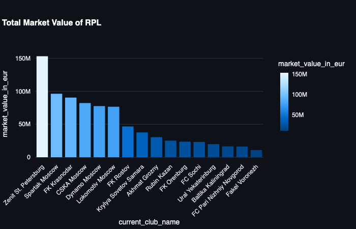

Here you can see transfer value by clubs
As can be seen, in RPL club points depend on Transfer value 🟡
1) Club points depend on number of players from national team in the squad ðŸŸ
2) The number of players from national team for each team depends on transfer value => national team players are often expensive 🟡
3) The number of players from national team for each club depends on the average age of the team => the older is a team, the more national team players ðŸŸ
{% endblock %}